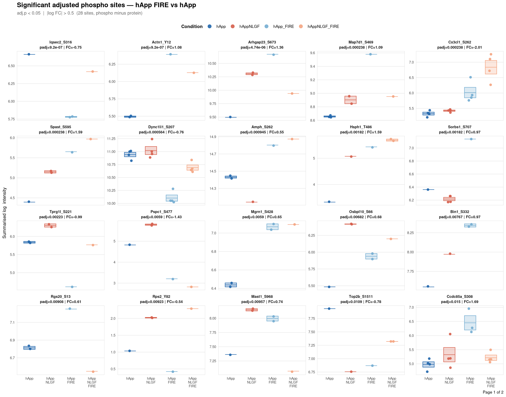
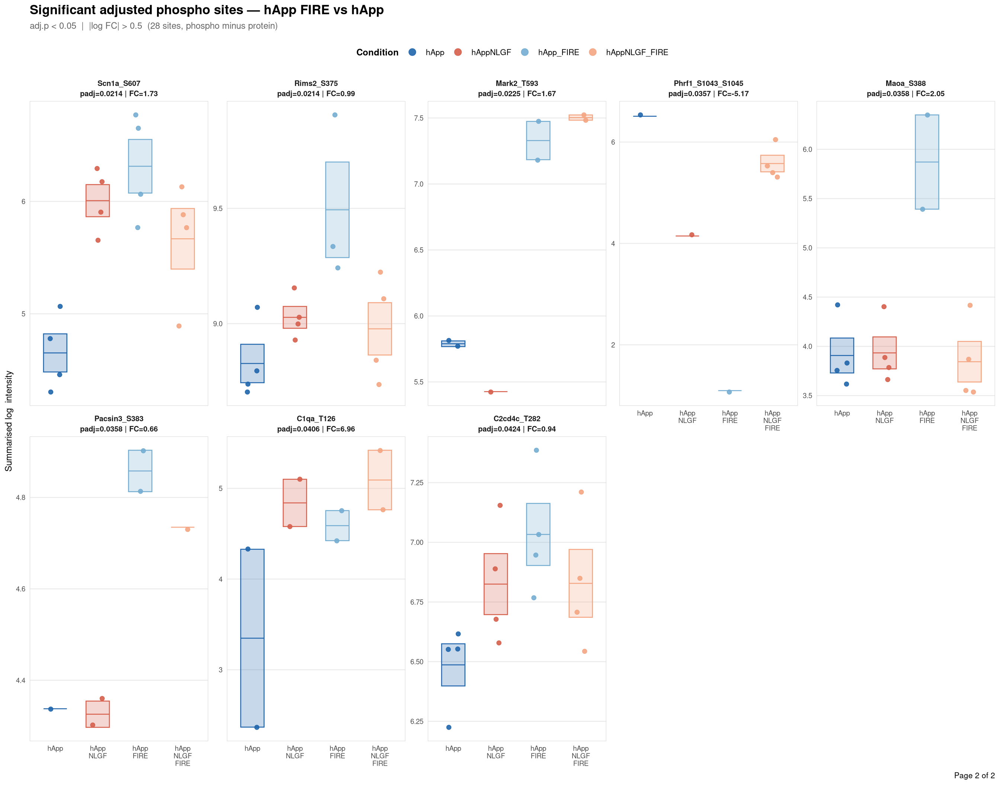
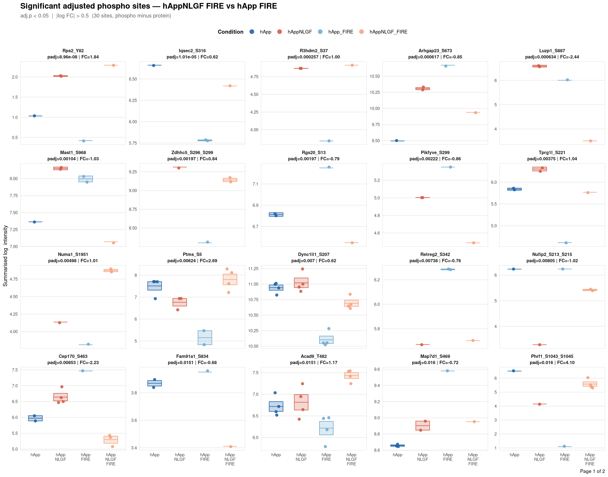
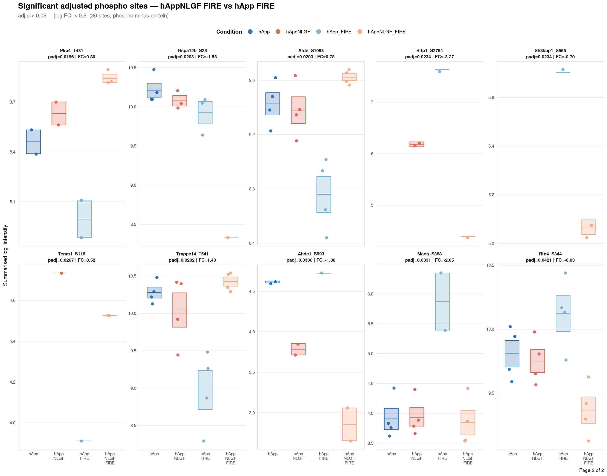
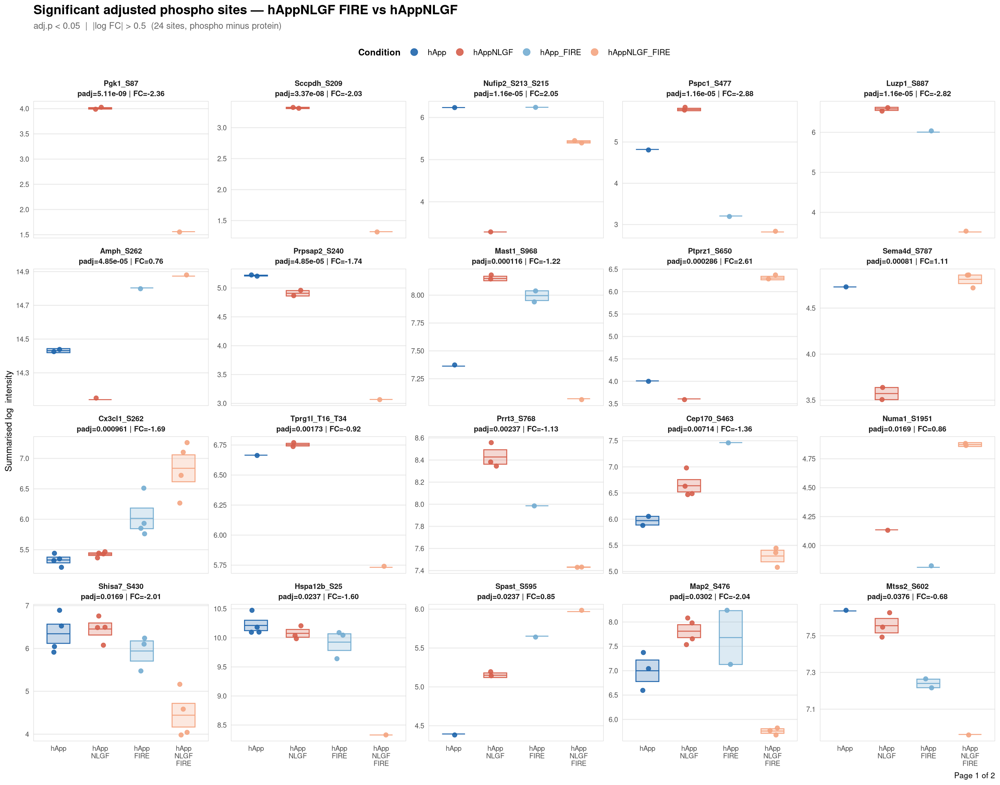
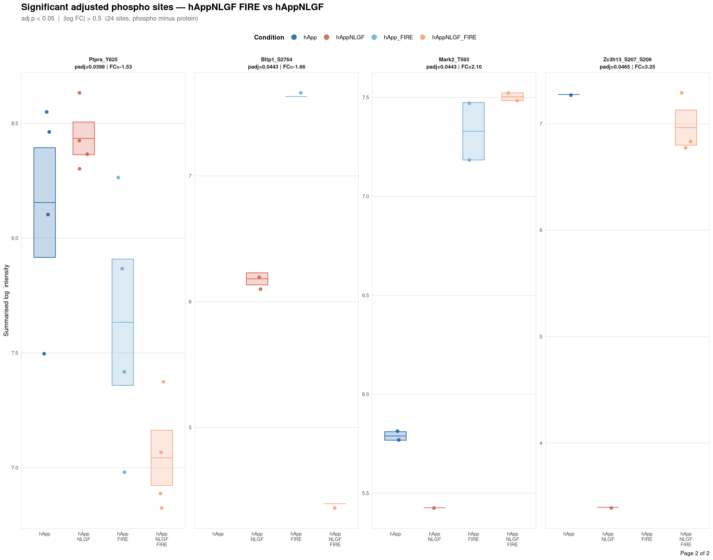
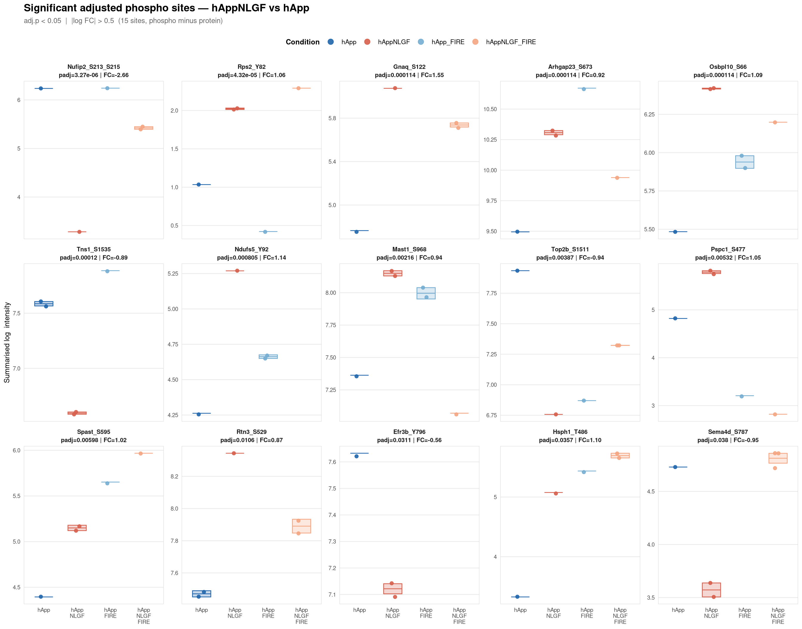
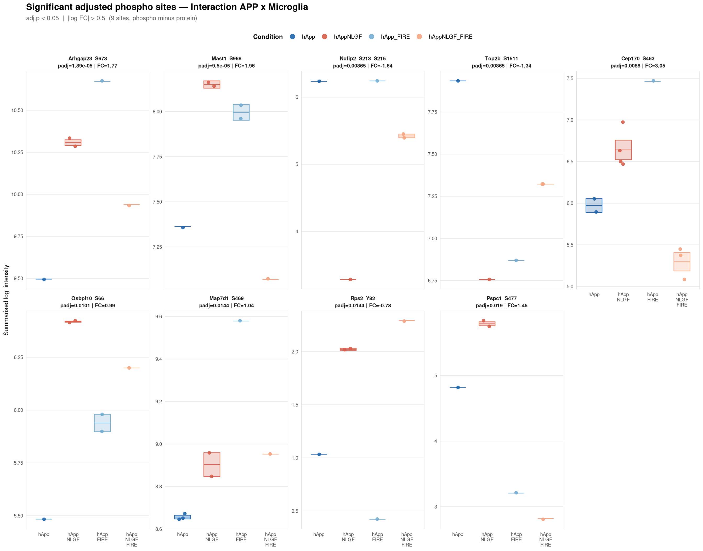

Code
base_dir <- "/nemo/lab/destrooperb/home/shared/zanettc/giulia_proteomics/phosphoproteomics"
run_num <- "run3"
results_dir <- file.path(base_dir, "results", run_num)
objects_dir <- file.path(base_dir, "data", "processed", run_num)Per-site intensity profiles for all significant adjusted phospho sites (FDR < 0.05, |log2FC| > 0.5) in each contrast. Each panel shows the MSstatsPTM-summarised log₂ intensity across the four conditions, with individual replicate points and a mean ± SE crossbar. Panels are ordered by adjusted p-value (most significant first) and paginated at 20 sites per page.
Inputs:
PTM_adjusted_GroupComparison.csv — adjusted DE results from notebook 02summarised_ptm.qs2 → $PTM$ProteinLevelData — per-run summarised log₂ intensitiesThresholds match notebook 03 (volcano): FDR < 0.05, |log2FC| > 0.5.
A 2×2 factorial colour scheme: blue family = hApp genotype, red/orange family = NLGF; dark = microglia present (WT FIRE locus), light = microglia depleted (FIRE KO).
adj <- fread(file.path(results_dir, "PTM_adjusted_GroupComparison.csv"))
adj[, Accession := str_extract(Protein, "^[^_;]+")]
adj[, Sites_in_id := str_extract(Protein, "(?<=_)[STY][0-9]+(?:_[STY][0-9]+)*")]
adj[, Gene := mapIds(org.Mm.eg.db, keys = Accession,
column = "SYMBOL", keytype = "UNIPROT",
multiVals = "first")]
adj[, Gene := ifelse(is.na(Gene) | Gene == "", Accession, Gene)]
adj[, SiteLabel := ifelse(is.na(Sites_in_id), Gene,
paste0(Gene, "_", Sites_in_id))]
ADJ_PVAL_CUTOFF <- 0.05
LOGFC_CUTOFF <- 0.5
adj_sig <- adj[adj.pvalue < ADJ_PVAL_CUTOFF & abs(log2FC) > LOGFC_CUTOFF]
cat("Significant sites per contrast:\n")Significant sites per contrast: Label N
<char> <int>
1: Interaction_APP_x_Microglia 9
2: hAppNLGF_FIRE_vs_hAppNLGF 24
3: hAppNLGF_FIRE_vs_hApp_FIRE 30
4: hAppNLGF_vs_hApp 15
5: hApp_FIRE_vs_hApp 28ProteinLevelData rows: 94741 | unique sites: 8883 Produces a multi-page cairo_pdf for one contrast. Each panel = one significant site, labelled with gene symbol, residue position, adjusted p-value, and log2FC from the adjusted DE model. Panels are ordered by ascending adj.pvalue; pages hold ≤ 20 panels.
PAGE_SIZE <- 20
make_profiles <- function(contrast_label) {
sig_ct <- adj_sig[Label == contrast_label][order(adj.pvalue)]
n_sig <- nrow(sig_ct)
if (n_sig == 0) {
message("No significant sites for ", contrast_label, " — skipping.")
return(invisible(NULL))
}
# Build per-panel facet label: Gene_Sxxx\npadj=x.xxx | FC=±x.xx
sig_ct[, FacetLabel := sprintf(
"%s\npadj=%.3g | FC=%.2f", SiteLabel, adj.pvalue, log2FC
)]
# Ordered factor levels (most significant first)
sig_ct[, FacetLabel := factor(FacetLabel, levels = unique(FacetLabel))]
# Pull ProteinLevelData for these sites and join facet labels
pld_sig <- pld[Protein %in% sig_ct$Protein]
pld_sig <- merge(pld_sig,
sig_ct[, .(Protein, FacetLabel, adj.pvalue)],
by = "Protein")
pld_sig[, FacetLabel := factor(FacetLabel, levels = levels(sig_ct$FacetLabel))]
n_pages <- ceiling(n_sig / PAGE_SIZE)
safe <- gsub(" ", "_", contrast_label)
pdf_path <- file.path(results_dir, glue("PhosphoProfiles_{safe}.pdf"))
plots <- vector("list", n_pages)
cairo_pdf(pdf_path, onefile = TRUE, width = 14, height = 11)
for (pg in seq_len(n_pages)) {
idx_lo <- (pg - 1L) * PAGE_SIZE + 1L
idx_hi <- min(pg * PAGE_SIZE, n_sig)
pg_sites <- levels(sig_ct$FacetLabel)[idx_lo:idx_hi]
pg_data <- pld_sig[FacetLabel %in% pg_sites]
pg_data[, FacetLabel := factor(FacetLabel, levels = pg_sites)]
ncol_n <- min(5L, length(pg_sites))
page_caption <- if (n_pages > 1) glue("Page {pg} of {n_pages}") else NULL
p <- ggplot(pg_data,
aes(x = GROUP, y = LogIntensities, colour = GROUP)) +
stat_summary(fun.data = mean_se,
geom = "crossbar",
mapping = aes(fill = GROUP),
width = 0.55,
linewidth = 0.45,
fatten = 1,
alpha = 0.25,
show.legend = FALSE) +
geom_jitter(width = 0.12, size = 1.8, alpha = 0.9) +
scale_colour_manual(values = cond_cols, limits = COND_ORDER) +
scale_fill_manual(values = cond_cols, limits = COND_ORDER) +
scale_x_discrete(limits = COND_ORDER, labels = cond_labels) +
facet_wrap(~ FacetLabel, ncol = ncol_n, scales = "free_y") +
labs(
x = NULL,
y = "Summarised log₂ intensity",
title = glue("Significant adjusted phospho sites — {gsub('_', ' ', contrast_label)}"),
subtitle = glue(
"adj.p < {ADJ_PVAL_CUTOFF} | |log₂FC| > {LOGFC_CUTOFF} ",
"({n_sig} site{ifelse(n_sig==1,'','s')}, phospho minus protein)"
),
caption = page_caption,
colour = "Condition"
) +
theme_minimal(base_size = 10) +
theme(
plot.title = element_text(face = "bold", size = 13, hjust = 0),
plot.subtitle = element_text(size = 9, colour = "grey40",
margin = margin(b = 8)),
strip.text = element_text(face = "bold", size = 7.5,
lineheight = 1.15),
axis.text.x = element_text(size = 7, lineheight = 0.9),
axis.text.y = element_text(size = 7),
axis.title.y = element_text(size = 9),
panel.grid.minor = element_blank(),
panel.grid.major.x = element_blank(),
panel.border = element_rect(colour = "grey85", fill = NA,
linewidth = 0.4),
legend.position = "top",
legend.title = element_text(size = 9, face = "bold"),
legend.text = element_text(size = 8)
) +
guides(colour = guide_legend(nrow = 1, override.aes = list(size = 3)))
plots[[pg]] <- p
print(p) # → PDF device
}
dev.off() # close PDF before printing to screen
for (p in plots) print(p)
cat("Saved:", pdf_path, "(", n_pages, "page(s),", n_sig, "sites)\n")
invisible(pdf_path)
}
Saved: /nemo/lab/destrooperb/home/shared/zanettc/giulia_proteomics/phosphoproteomics/results/run3/PhosphoProfiles_hApp_FIRE_vs_hApp.pdf ( 2 page(s), 28 sites)

Saved: /nemo/lab/destrooperb/home/shared/zanettc/giulia_proteomics/phosphoproteomics/results/run3/PhosphoProfiles_hAppNLGF_FIRE_vs_hApp_FIRE.pdf ( 2 page(s), 30 sites)

Saved: /nemo/lab/destrooperb/home/shared/zanettc/giulia_proteomics/phosphoproteomics/results/run3/PhosphoProfiles_hAppNLGF_FIRE_vs_hAppNLGF.pdf ( 2 page(s), 24 sites)
Saved: /nemo/lab/destrooperb/home/shared/zanettc/giulia_proteomics/phosphoproteomics/results/run3/PhosphoProfiles_hAppNLGF_vs_hApp.pdf ( 1 page(s), 15 sites)

Saved: /nemo/lab/destrooperb/home/shared/zanettc/giulia_proteomics/phosphoproteomics/results/run3/PhosphoProfiles_Interaction_APP_x_Microglia.pdf ( 1 page(s), 9 sites)---
title: "6b. Phospho — Site intensity profiles"
---
## Overview
Per-site intensity profiles for all significant adjusted phospho sites (FDR < 0.05, |log2FC| > 0.5) in each contrast. Each panel shows the MSstatsPTM-summarised log₂ intensity across the four conditions, with individual replicate points and a mean ± SE crossbar. Panels are ordered by adjusted p-value (most significant first) and paginated at 20 sites per page.
**Inputs:**
- `PTM_adjusted_GroupComparison.csv` — adjusted DE results from notebook 02
- `summarised_ptm.qs2` → `$PTM$ProteinLevelData` — per-run summarised log₂ intensities
**Thresholds** match notebook 03 (volcano): FDR < 0.05, |log2FC| > 0.5.
## Libraries
```{r setup, include=FALSE, message=FALSE}
library(data.table)
library(qs2)
library(dplyr)
library(stringr)
library(glue)
library(ggplot2)
library(AnnotationDbi)
library(org.Mm.eg.db)
```
## Directories
```{r}
base_dir <- "/nemo/lab/destrooperb/home/shared/zanettc/giulia_proteomics/phosphoproteomics"
run_num <- "run3"
results_dir <- file.path(base_dir, "results", run_num)
objects_dir <- file.path(base_dir, "data", "processed", run_num)
```
## Condition palette and order
A 2×2 factorial colour scheme: blue family = hApp genotype, red/orange family = NLGF;
dark = microglia present (WT FIRE locus), light = microglia depleted (FIRE KO).
```{r palette}
COND_ORDER <- c("hApp", "hAppNLGF", "hApp_FIRE", "hAppNLGF_FIRE")
cond_cols <- c(
hApp = "#2166AC",
hAppNLGF = "#D6604D",
hApp_FIRE = "#74ADD1",
hAppNLGF_FIRE = "#F4A582"
)
cond_labels <- c(
hApp = "hApp",
hAppNLGF = "hApp\nNLGF",
hApp_FIRE = "hApp\nFIRE",
hAppNLGF_FIRE = "hApp\nNLGF\nFIRE"
)
```
## Load adjusted DE results
```{r load_de}
adj <- fread(file.path(results_dir, "PTM_adjusted_GroupComparison.csv"))
adj[, Accession := str_extract(Protein, "^[^_;]+")]
adj[, Sites_in_id := str_extract(Protein, "(?<=_)[STY][0-9]+(?:_[STY][0-9]+)*")]
adj[, Gene := mapIds(org.Mm.eg.db, keys = Accession,
column = "SYMBOL", keytype = "UNIPROT",
multiVals = "first")]
adj[, Gene := ifelse(is.na(Gene) | Gene == "", Accession, Gene)]
adj[, SiteLabel := ifelse(is.na(Sites_in_id), Gene,
paste0(Gene, "_", Sites_in_id))]
ADJ_PVAL_CUTOFF <- 0.05
LOGFC_CUTOFF <- 0.5
adj_sig <- adj[adj.pvalue < ADJ_PVAL_CUTOFF & abs(log2FC) > LOGFC_CUTOFF]
cat("Significant sites per contrast:\n")
print(adj_sig[, .N, by = Label][order(Label)])
```
## Load summarised intensities
```{r load_pld}
summ <- qs_read(file.path(objects_dir, "summarised_ptm.qs2"))
pld <- as.data.table(summ$PTM$ProteinLevelData)
pld[, GROUP := factor(GROUP, levels = COND_ORDER)]
cat("ProteinLevelData rows:", nrow(pld),
" | unique sites:", uniqueN(pld$Protein), "\n")
```
## Profile-plot helper
Produces a multi-page `cairo_pdf` for one contrast. Each panel = one significant site,
labelled with gene symbol, residue position, adjusted p-value, and log2FC from the
adjusted DE model. Panels are ordered by ascending adj.pvalue; pages hold ≤ 20 panels.
```{r profile_fn}
PAGE_SIZE <- 20
make_profiles <- function(contrast_label) {
sig_ct <- adj_sig[Label == contrast_label][order(adj.pvalue)]
n_sig <- nrow(sig_ct)
if (n_sig == 0) {
message("No significant sites for ", contrast_label, " — skipping.")
return(invisible(NULL))
}
# Build per-panel facet label: Gene_Sxxx\npadj=x.xxx | FC=±x.xx
sig_ct[, FacetLabel := sprintf(
"%s\npadj=%.3g | FC=%.2f", SiteLabel, adj.pvalue, log2FC
)]
# Ordered factor levels (most significant first)
sig_ct[, FacetLabel := factor(FacetLabel, levels = unique(FacetLabel))]
# Pull ProteinLevelData for these sites and join facet labels
pld_sig <- pld[Protein %in% sig_ct$Protein]
pld_sig <- merge(pld_sig,
sig_ct[, .(Protein, FacetLabel, adj.pvalue)],
by = "Protein")
pld_sig[, FacetLabel := factor(FacetLabel, levels = levels(sig_ct$FacetLabel))]
n_pages <- ceiling(n_sig / PAGE_SIZE)
safe <- gsub(" ", "_", contrast_label)
pdf_path <- file.path(results_dir, glue("PhosphoProfiles_{safe}.pdf"))
plots <- vector("list", n_pages)
cairo_pdf(pdf_path, onefile = TRUE, width = 14, height = 11)
for (pg in seq_len(n_pages)) {
idx_lo <- (pg - 1L) * PAGE_SIZE + 1L
idx_hi <- min(pg * PAGE_SIZE, n_sig)
pg_sites <- levels(sig_ct$FacetLabel)[idx_lo:idx_hi]
pg_data <- pld_sig[FacetLabel %in% pg_sites]
pg_data[, FacetLabel := factor(FacetLabel, levels = pg_sites)]
ncol_n <- min(5L, length(pg_sites))
page_caption <- if (n_pages > 1) glue("Page {pg} of {n_pages}") else NULL
p <- ggplot(pg_data,
aes(x = GROUP, y = LogIntensities, colour = GROUP)) +
stat_summary(fun.data = mean_se,
geom = "crossbar",
mapping = aes(fill = GROUP),
width = 0.55,
linewidth = 0.45,
fatten = 1,
alpha = 0.25,
show.legend = FALSE) +
geom_jitter(width = 0.12, size = 1.8, alpha = 0.9) +
scale_colour_manual(values = cond_cols, limits = COND_ORDER) +
scale_fill_manual(values = cond_cols, limits = COND_ORDER) +
scale_x_discrete(limits = COND_ORDER, labels = cond_labels) +
facet_wrap(~ FacetLabel, ncol = ncol_n, scales = "free_y") +
labs(
x = NULL,
y = "Summarised log₂ intensity",
title = glue("Significant adjusted phospho sites — {gsub('_', ' ', contrast_label)}"),
subtitle = glue(
"adj.p < {ADJ_PVAL_CUTOFF} | |log₂FC| > {LOGFC_CUTOFF} ",
"({n_sig} site{ifelse(n_sig==1,'','s')}, phospho minus protein)"
),
caption = page_caption,
colour = "Condition"
) +
theme_minimal(base_size = 10) +
theme(
plot.title = element_text(face = "bold", size = 13, hjust = 0),
plot.subtitle = element_text(size = 9, colour = "grey40",
margin = margin(b = 8)),
strip.text = element_text(face = "bold", size = 7.5,
lineheight = 1.15),
axis.text.x = element_text(size = 7, lineheight = 0.9),
axis.text.y = element_text(size = 7),
axis.title.y = element_text(size = 9),
panel.grid.minor = element_blank(),
panel.grid.major.x = element_blank(),
panel.border = element_rect(colour = "grey85", fill = NA,
linewidth = 0.4),
legend.position = "top",
legend.title = element_text(size = 9, face = "bold"),
legend.text = element_text(size = 8)
) +
guides(colour = guide_legend(nrow = 1, override.aes = list(size = 3)))
plots[[pg]] <- p
print(p) # → PDF device
}
dev.off() # close PDF before printing to screen
for (p in plots) print(p)
cat("Saved:", pdf_path, "(", n_pages, "page(s),", n_sig, "sites)\n")
invisible(pdf_path)
}
```
## Generate profile plots — all contrasts
```{r run_profiles, fig.width=14, fig.height=11, message=FALSE}
contrasts_all <- sort(unique(adj_sig$Label))
for (ct in contrasts_all) make_profiles(ct)
```